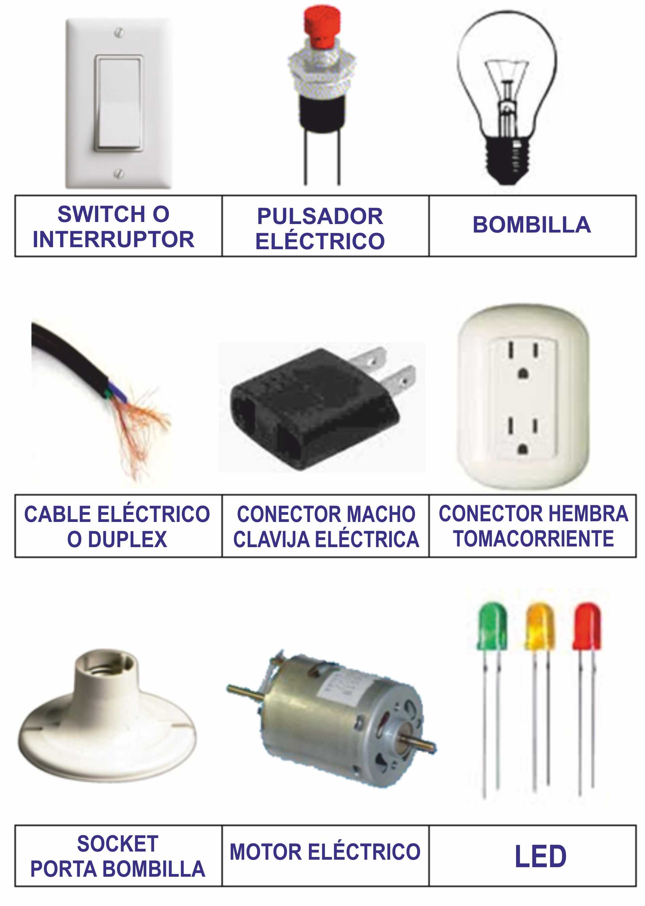
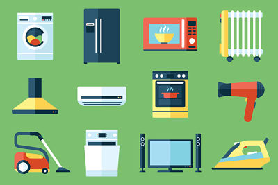
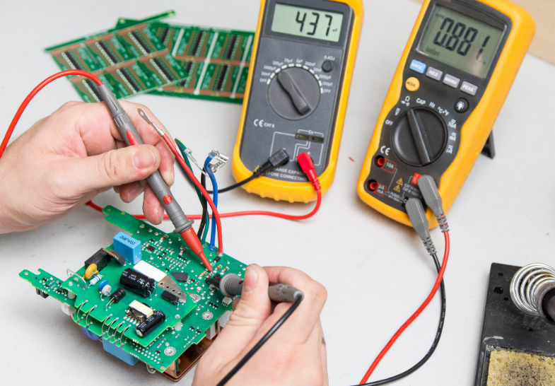
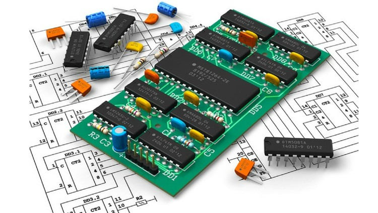
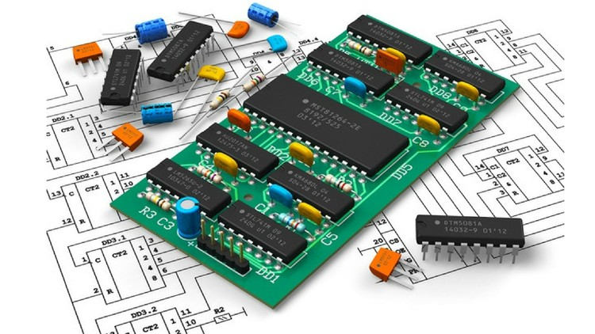

Operadores eléctricos son los que consiguen convertir en luz toda la corriente eléctrica que les llega, sin perder, como las bombillas incandescentes, una parte en forma de calor. Son materiales cuya resistencia al paso de la electricidad es muy baja.
• Tipos De Operadores Eléctricos - Son los que trabajan con electricidad son donde aparecen enchufes , como lavadoras , televisores , computadores , etc . - Los que trabajan con pilas esas funcionan con baterías o pilas muchos de ellos se puede conectar a la red eléctrica para economizar muchos artefactos como teléfonos, celulares , tables etc , utilizan pilas recargables .
 Electrónica: es un derivado de la electricidad que opera con bajos niveles de voltaje, gracias a semiconductores que permiten, o no, el paso de la energía eléctrica, dependiendo de ciertas condiciones. eléctrica en forma de electrones y su unidad fundamental es el Amperio.
El diseño de circuitos es la parte de la electrónica que estudia distintas metodologías con el fin de desarrollar un circuito electrónico, que puede ser tanto analógico como digital. En función del número de componentes que forman al ser integrados se habla de diferentes escalas de integración. Las fronteras entre las distintas escalas son difusas, pero se denominan SSI (Small Scale of Integration) los circuitos de baja complejidad (algunas docenas de componentes en un mismo chip), MSI (Medium Scale of Integration) y LSI (Large Scale Integration) los circuitos de media y alta complejidad, y finalmente VLSI (Very Large Scale Integration) para circuitos extraordinariamente complejos, hasta cientos de millones de transistores. En esta última categoría entrarían los microprocesadores modernos.
 
